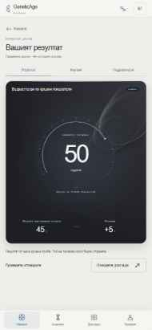
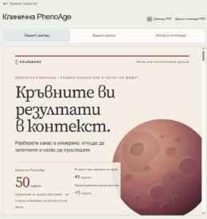

KoleQuant
KoleQuant
Nytheria от KoleQuant
Виж здравето си в цялост.
Nytheria свързва кръвни биомаркери, генетични данни и показатели за биологична възраст в един личен здравен профил.

- Кръвни биомаркери
- Генетични данни
- Биологична възраст
Твоите резултати в един профил
Разгледай здравните приоритети, показателите за проследяване и въпросите за обсъждане със специалист в един примерен профил.
Виж примерния докладПримерен доклад
- Здравни приоритети
- Показатели за проследяване
- Въпроси за специалист
Подходът Nytheria
От измервания до ясни приоритети.
Установи отправна точка
Кръвните показатели, генетичните данни и здравната история се разглеждат заедно.
Разбери резултатите
Прегледът със специалист поставя резултатите в контекст и помага да подредиш следващите стъпки.
Проследи промяната
Повторните измервания на важните показатели помагат да видиш какво се е променило.
GeneticAge
Виж оценката на биологичната си възраст по кръвни показатели и какво стои зад резултата.


Екрани с примерни данни
Ясно какво измерваме и какво означава.
Разгледай примерните биомаркери, принципите за интерпретация и подхода към личните данни.
Често задавани въпроси
Какво получавам с ранния достъп?
Известия за старта на Nytheria, програмата и условията за участие.
Как се разглеждат резултатите?
Резултатите се разглеждат заедно със здравната история, ежедневието и личните цели. Виж подхода на Nytheria.
Как използвате данните ми?
Формата за ранен достъп служи за контакт. Прочети за личните данни.
Научи кога стартира Nytheria.
Запиши се за информация за програмата, цената и условията за участие.